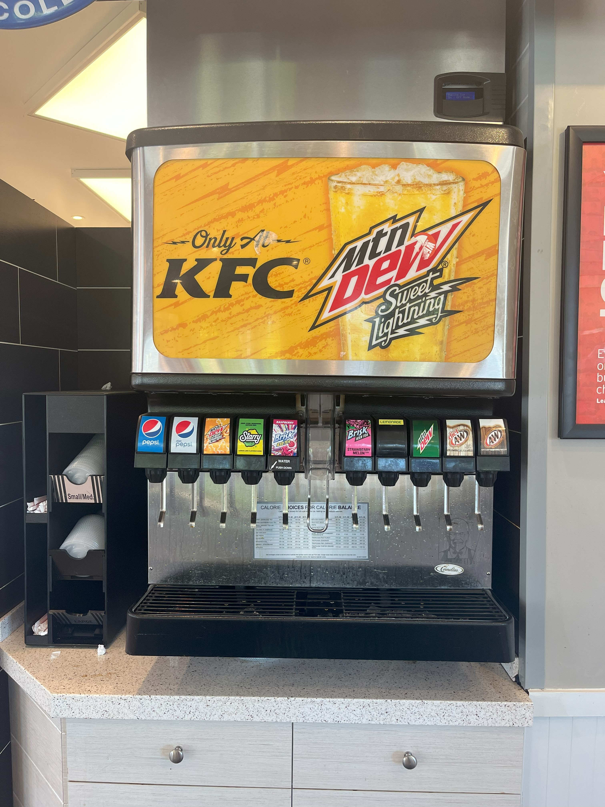
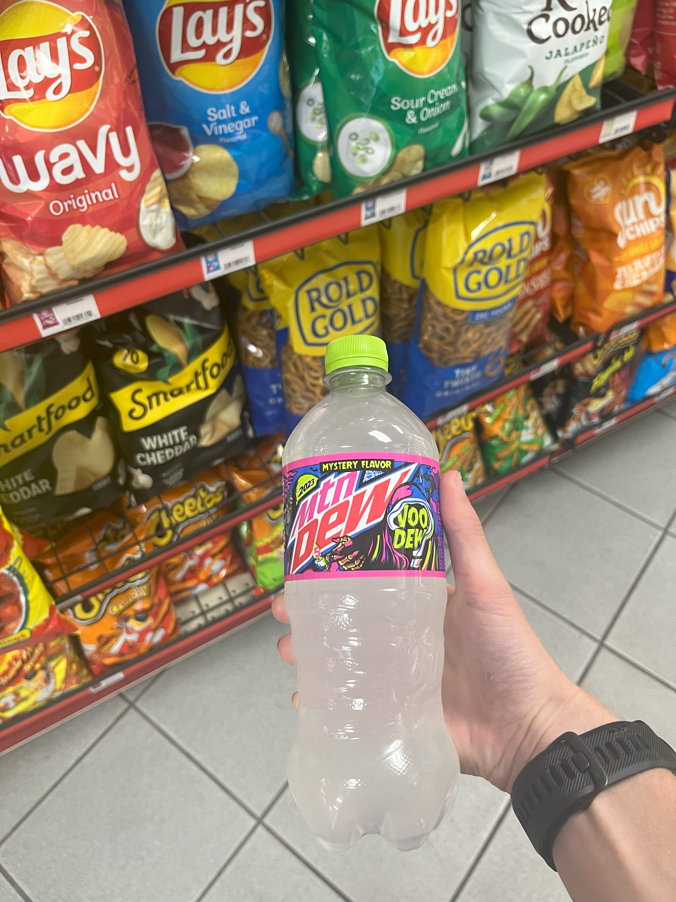

12. Code Red
Code Red is...alright. It's not the best cherry soda, but it's not the worst. I might be biased though. Every time I see this flavor, I remember chugging two cans of Code Red at my 7th grade semi-formal dance and immediately regretting it.
11. Live Wire
Just your standard orange soda. Nothing to see here.
10. Spark
Mountain Dew Spark is a very solid flavor. The raspberry and lemonade flavors complement each other remarkably well. Not quite the flavor you'd expect for a soda, but I'd give it a 6/10.
9. Baja Passionfruit Punch
Drinking Baja Passionfruit Punch is like taking your mouth on vacation to a tropical paradise. If you're looking for something unique, Passionfruit Punch is the way to go.
8. Baja Caribbean Splash
Guava is definitely an unusual flavor for an American soda, but Mountain Dew makes a great one! 7.5/10.
7. Sweet Lightning
Only at KFC, Sweet Lightning is a flavor to remember. Notes of peach and honey combine to produce an electrifying taste. Check this one out next time your picking up a bucket of Kentucky fried chicken!
6. Voodew 2022
Sour candy isn't a flavor that you'd expect to find in your soda can, but Mountain Dew makes it work!
5. Purple Thunder
With a flavor profile similar(ish) to Fanta Grape, Purple Thunder proclaims itself to be Dew with a blast of Berry Plum flavor. Also found in slushie form at a gas station near you, Purple Thunder is not something you want to miss out on. 8.5/10.
4. Summer Freeze
Summer Freeze tastes like a red, white, and blue popsicle at the end of a hot summer day. Hits of cherry, lemon, and raspberry combine to produce a true masterpiece of a flavor.
3. Pitch Black
This was my absolute favorite flavor growing up. Speaking as an advocate for grape sodas everywhere, Mountain Dew raises the bar with their Pitch Black flavor. Arguably the best grape soda of all time.
2. Voodew 2023
Although Mountain Dew claims the Voodew 2023 flavor is Cherry Airheads, I'm not so sure. Personally, I think it's more a general "fruity candy" flavor. Snag a can of this is you get the chance! 9.9/10.
1. Voltage
Voltage is the G.O.A.T. The electric blue color combined with a pristine blue raspberry flavor makes an incredible soda, perfect both in terms of aesthetics and flavor profile. There's nothing better than an ice-cold can of Voltage.